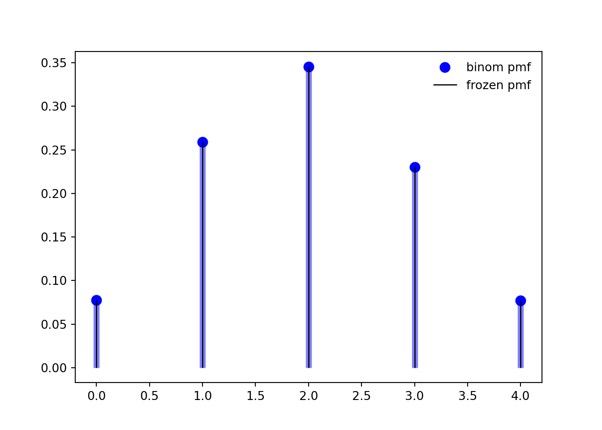
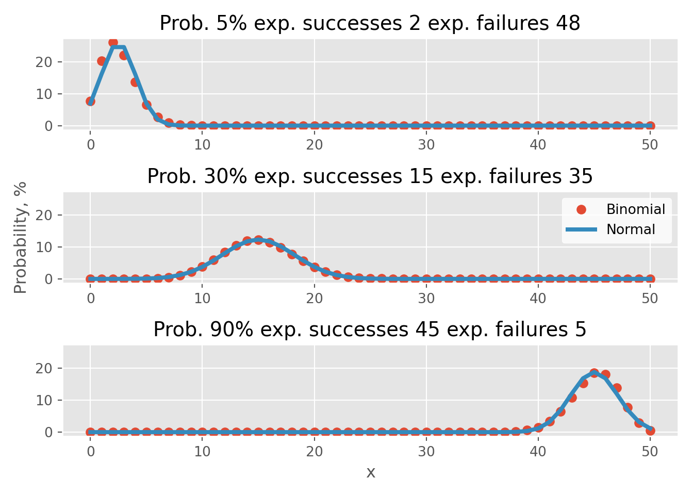
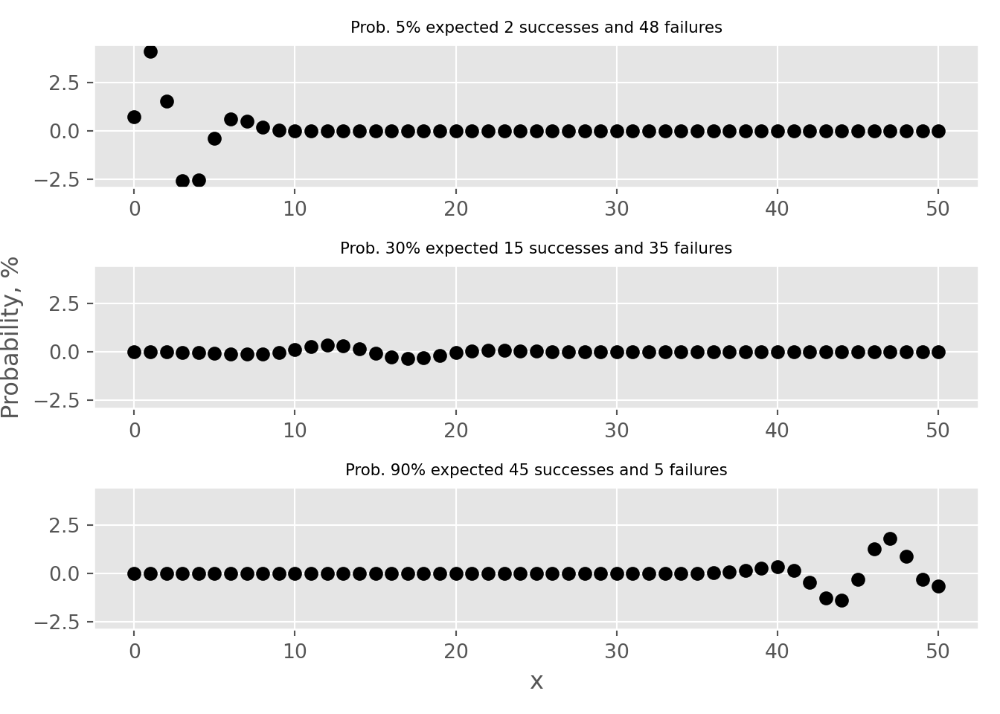

Code
# load libraries for blog post
library(ggplot2)
library(plotly)
library(data.table)The binomial test is a statistical test used to determine whether the proportion of cases in one of only two categories is equivalent to a pre-specified proportion. Categories could include the default rate of clients within the next 12 months, patients with high or low risk of heart disease, potential customers who are likely or not likely to make a purchase, or the rate of manufacturing defects. This widely used test finds applications in diverse fields, including credit risk, medicine, and manufacturing. It is also known to as the one-sample proportion test or test of one proportion.
As with all statistical tests, the binomial test has assumptions and conditions that must be met before applying it to real-life data:
The aim of this blog post is to showcase the ramifications of failing to meet “success-failure” condition critereon. Practical examples are coded in both R and Python languages.
# load libraries for blog post
library(ggplot2)
library(plotly)
library(data.table)# load packages for blog post
import numpy as np
import pandas as pd
import matplotlib.pyplot as plt
import plotly.graph_objects as go
from scipy.stats import binom, norm
# set style
plt.style.use("ggplot")Suppose that we have a sample where outcomes are binary - e.g. only “success” and “failure”. For the given sample, we would like to estimate the true proportion and also set up a statistical test to verify whether if the proportion is equal to some value, e.g. expected.
First, we calculate a point estimate:
\[p = \frac{n_s}{n}\]
, where \(n\) - sample size and \(n_s\) - the number of successful observations (or it can be the number of failures).
\[SE = \sqrt{\frac{p \cdot (1 - p)}{n}}\] , where \(SE\) is standard error. To perform a test, one first needs to derive a Null hypothesis:
\[H_0: p = p_0\]
and an alternative hypothesis:
Finally, we needs to calculate \(Z\) statistics:
\[Z = \frac{p_0-p}{SE}\]
Obtaining the value of \(Z\) enables us to either compute confidence intervals (\(CI\)) or reject \(H_0\) in favor of \(H_A\)
In order to approximate any distribution as normal, the mean (\(\mu\)) and standard deviation (\(\sigma\)) must be known/calculated. For the Binomial distribution comprising \(n\) experiments and a probability of \(p\) normal distribution mean will be located at:
To approximate any distribution as normal, it is imperative to calculate the mean (\(\mu\)) and standard deviation (\(\sigma\)). For the Binomial distribution, which consists of a number of experiments \(n\) and a probability \(p\), the mean of the normal distribution is:
\[\mu = n \cdot p\]
and the standard deviation:
\[\sigma = \sqrt{n \cdot p \cdot (1 - p)}.\]
Meeting the “Success-Failure” condition is crucial to approximate Binomial distribution as Normal. Below, I present an instance of 50 Binomial events with varying probability rates of 5%, 30%, and 90%.
# probabilities
p <- c(0.05, 0.3, 0.9)
# successes
x <- 0:50
# create data.table
dt <- CJ(p, x)
# add size column
dt[, size := 50]
# add binomial probability
dt[, Binomial := dbinom(x, size=size, prob=p) * 100]
# create label column
dt[, label := paste0("Prob: ", round(p*100),
"%, exp. successes ", round(p*size),
" exp. failures ", round((1-p)*size))]
# calculate mean and standard deviation
dt[, mu := size * p]
dt[, st.dev := sqrt(p * (1 - p) * size)]
# get norm distribution
dt[, Normal := dnorm(x, mean=mu, sd = st.dev) * 100]
# convert to ordered factor
dt[, label := factor(label, levels=c("Prob: 5%, exp. successes 2 exp. failures 48",
"Prob: 30%, exp. successes 15 exp. failures 35",
"Prob: 90%, exp. successes 45 exp. failures 5" ))]
# reshape for plotting
dt.plot <- melt(dt, id.vars = c("x", "label"),
measure.vars = c("Binomial", "Normal"),
variable.name = c("Type"),
value.name = c('prob'))
# create figure
fig <- ggplot(dt.plot, aes(x, prob, color=Type)) + geom_point() + facet_wrap(~label, ncol = 1) + ylab("Probability, %")
fig
# calculate error (use data.table from previous code chunk)
dt[, Error := Binomial - Normal]
# create figure
fig <- ggplot(dt, aes(x, Error)) + geom_point() + facet_wrap(~label, ncol = 1) + ylab("Error (binom. - norm.), %")
fig
# probabilities
p = [0.05, 0.3, 0.9]
# successes
x = np.arange(51)
# create DataFrame with all combinations
df_1 = pd.DataFrame({'p': p})
df_2 = pd.DataFrame({'x': x})
# create key for joining
df_1['key'] = 0
df_2['key'] = 0
# perform cross join
df = df_1.merge(df_2, on='key', how='outer')
# drop key column
del df['key']
# add size value
df['size'] = 50
# calculate binomial probability
df['Binomial'] = binom.pmf(df['x'], df['size'], df['p']) * 100
# calculate mean and standard deviation
df['mu'] = df['size'] * df['p']
df['se'] = np.sqrt(df['p'] * (1 - df['p']) / df['size'])
df['std'] = np.sqrt(df['p'] * (1 - df['p']) * df['size'])
# get norm distribution
df['Normal'] = df.apply(lambda x: norm.pdf(x['x'], x['mu'], x['std']) * 100, axis = 1)
# create figure
fig, ax = plt.subplots(3, 1, sharey=True)
# iterate over probabilities
for i, _p in enumerate(p):
# select data for plotting
dt_plot = df.loc[df['p'] == _p].copy()
# plot binomial and normal distributions
ax[i].plot(dt_plot['x'], dt_plot['Binomial'], "o", label='Binomial');
ax[i].plot(dt_plot['x'], dt_plot['Normal'], "-", label='Normal', linewidth=3);
# add sub titles
ax[i].set_title(f"Prob. {_p*100:.0f}% expected {50*_p:.0f} successes and {50*(1-_p):.0f} failures", fontsize=8);
# add labels
ax[1].set_ylabel("Probability, %");
ax[2].set_xlabel("x");
# add legend and white background
legend = ax[1].legend(frameon = 1);
frame = legend.get_frame();
frame.set_color('white');
plt.tight_layout()
plt.show()
# calculate error (use DataFrame from previous code chunk)
df['Error'] = df.Binomial - df.Normal
# create figure
fig, ax = plt.subplots(3, 1, sharey=True)
# iterate over probabilities
for i, _p in enumerate(p):
# select data for plotting
dt_plot = df.loc[df['p'] == _p]
# plot binomial and normal distributions
ax[i].plot(dt_plot['x'], dt_plot['Error'], "o", color='k', markersize=3);
# add sub titles
ax[i].set_title(f"Prob. {_p*100:.0f}% expected {50*_p:.0f} successes and {50*(1-_p):.0f} failures", fontsize=8);
# adjust limits for better readability
ax[0].set_ylim(-4.9, 4.9)
# add labels(-4.9, 4.9)ax[1].set_ylabel("Probability, %")
ax[2].set_xlabel("x")
plt.tight_layout()
plt.show()
The first thing to notice is that the “Success-Failure” criterion is only met for the p=30% case. In tabs error one can see that approximation error, i.e. the difference between Binomial probability and Normal distribution approximations, is above 2% for the \(p=5\%\) and \(p=90\%\) examples.
There are a different way to calculate approximation error dependence on sample size. Let’s establish 3 types of probabilities:
We have to be mindful, when comparing discrete binomial distribution with a continuous normal distribution. In examples bellow, we can compare areas under the curve for both distributions using interactive charts by plotly library/package. First I create a function to visualize both pint cand cumulative probabilities using interactive charts.
PlotDistributions <- function(prob, size){
# create observation vector
x <- 0:(size*prob*3)
# get probabilities for both binomial and norm distributions
y.binom <- dbinom(x, size=size, prob=prob) * 100
y.norm <- dnorm(x, mean=size * prob, sd = sqrt(prob * (1 - prob) * size)) * 100
# create data table for plotting
dt <- data.table(x = x,
prob.binom = y.binom,
prob.norm = y.norm)
# add columns with hover information
dt[, text.1 := paste0('Point estimate probability<br>to observer exactly ', x,
' events is ', round(y.binom, 3), "%")]
dt[, text.2 := paste0('Point estimate probability<br>to observer exactly ', x,
' events is ', round(y.norm, 3), "%")]
dt[, text.3 := paste0('Point estimate error<br>to observer exactly ', x,
' events is ', round(y.binom - y.norm, 3), "%")]
# create figure
fig <- plot_ly(data = dt, type = 'scatter', mode = 'lines')
# add traces
fig <- fig %>% add_trace(x = ~x, y = ~prob.norm, text = ~text.1,
name = 'Normal',mode = 'lines',
hoverinfo = 'text',
line = list(color = "#FF6666", width = 5))
fig <- fig %>% add_trace(x = ~x, y = ~prob.binom, text = ~text.2,
name = 'Binomial',mode = 'markers',
hoverinfo = 'text',
marker = list(color = "#3399FF", size = 12))
fig <- fig %>% add_trace(x = ~x, y = ~(prob.binom-prob.norm), text = ~text.3,
name = 'Error',mode = 'lines+markers',
hoverinfo = 'text',
line = list(color = "black", width = 5),
marker = list(color = "black", size = 12),
visible = "legendonly")
# update layout
fig <- fig %>% layout(title = paste0("p = ", round(prob*100), "%, ", size, " trials"),
xaxis = list(title = "Observations"),
yaxis = list (title = "Probability, %"),
hovermode = "x unified",
legend=list(title=list(text='<b> Distributions </b>')))
# return figure
return(fig)
}# create function for plotting distributions
def plot_distributions(prob, size):
# create observation vector
x = np.arange(int(size*prob*3))
# get probabilities for both binomial and norm distributions
y_binom = binom.pmf(x, n=size, p=prob) * 100
# calculate variance and sigma
variance = size * prob * (1 - prob)
sigma = np.sqrt(variance)
y_norm = norm.pdf(x, loc = size * prob, scale = sigma) * 100
# generate Data.Frame
df = pd.DataFrame({'x': x, 'binom': y_binom, 'norm': y_norm})
# calculate error
df['error'] = df.binom - df.norm
error = df.binom - df.norm
# generate hover messages
df['text_1'] = df.apply(lambda x: f'Point estimate probability<br>to observer exactly {x["x"]:.0f} events is {x["binom"]:.3f}%', axis = 1)
df['text_2'] = df.apply(lambda x: f'Point estimate probability<br>to observer exactly {x["x"]:.0f} events is {x["norm"]:.3f}%', axis = 1)
df['text_3'] = df.apply(lambda x: f'Point estimate error<br>to observer exactly {x["x"]:.0f} events is {x["error"]:.3f}%', axis = 1)
# create figure
fig = go.Figure()
fig.add_trace(go.Scatter(x=x, y=y_norm, text = df['text_1'].values,
mode='lines', name='Normal', hoverinfo = 'text',
line=dict(color='#FF6666', width=5)))
fig.add_trace(go.Scatter(x=x, y=y_binom, text = df['text_2'].values,
mode='markers', name='Binomial', hoverinfo = 'text',
marker=dict(color='#3399FF', size=12)))
fig.add_trace(go.Scatter(x=x, y=error, text = df['text_3'].values,
mode='markers', name='Error', hoverinfo = 'text',
marker=dict(color='black', size=12),
visible = "legendonly"))
# Edit the layout
fig.update_layout(title=f"p = {prob*100:.1f}%, {size} trials",
xaxis_title='Observations',
yaxis_title='Probability, %',
template="ggplot2",
hovermode="x unified")
return figNext I provide examples using different probabilities.
# return figure
PlotDistributions(0.05, 200)# return figure
PlotDistributions(0.01, 500)# use python helper function from above
fig = plot_distributions(0.005, 500)
fig# use python helper function from above
fig = plot_distributions(0.001, 2000)
figLet’s taken hypothetical model of 1%, i.e. we expect to have 1% manufacturing defects or 1% of clients in our portfolio will fail to meet their credit obligations. For this hypothetical model to meet “Success-Failure” condition we would need to collect at least 1000 observations, i.e. to manufacture 1000 devices or issue credit to 1000 obligatory. Let’s compare 3 probabilities calculated using binomial and normal distribution approximation:
In all 3 cases, we need to calculated expected number of occurrences \(n \cdot p\). Let’s investigate sample sizes raging from 100 to 2000.
From the given example, we can ratios between probabilities for all 3 cases.
# create vector with different sample sizes
sampleSizes <- seq(100, 2000, 100)
# create data.table for p = 0.01, i.e. 1%
dt <- data.table(N = sampleSizes, p = 0.02)
# calculate expected number of observations and standard deviation
dt[, mu := N * p]
dt[, std := sqrt(p * (1 - p) * N)]
# calculate probabilities of observing:
# 1. less than the expected number of observations
# 2. exactly the expected number of observations
# 3. more than the expected number of observations
dt[, binom.1 := pbinom(mu-1, size=N, prob=p)]
dt[, binom.2 := dbinom(mu, size=N, prob=p)]
dt[, binom.3 := 1 - pbinom(mu, size=N, prob=p)]
# same but for normal distribution
dt[, norm.1 := pnorm(mu-1, mean = mu, sd = std)]
dt[, norm.2 := pnorm(mu+1, mean = mu, sd = std) - pnorm(mu-1, mean = mu, sd = std)]
dt[, norm.3 := 1 - pnorm(mu+1, mean = mu, sd = std)]
# calculate errors
dt[, error.left := binom.1/norm.1]
dt[, error.right := binom.3/norm.3]# load packages for blog postContent for this blog post was prepared using following references: